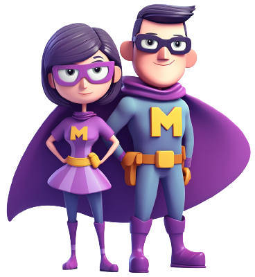

Herramientas MegaProfe y Twinkl AI
Capacitación técnica y práctica diseñada para profesores, docentes y educadores de todas las áreas.
Equipo desarrollador TIC
Julián Esteban Pinto Rincón
Yeison Estiben Espitia Preciado
Diego Alejandro Viancha Viancha
Davinson Ferley Díaz Ojeda
Oscar Jerónimo Fajardo Alfonso
Proyecto formativo
Institución:SENA CIMM
Programa:Tecnólogo Impl. Infraestructura TIC
Instructor:Omar Osvaldo González Roa
01 · Introducción
¿Qué vamos a aprender hoy?
El objetivo es desmitificar la IA y convertirla en un asistente pedagógico real que optimice el tiempo de planificación del docente, manteniendo siempre el rigor y la calidad educativa.
🧠
1. Comprender
Analizar MegaProfe y Twinkl AI como motores (LLM) y su correcta integración dentro del modelo pedagógico de tu institución.
💻
2. Utilizar
Dominar la Ingeniería de Prompts para obtener material adaptado a los estándares curriculares de tu área de enseñanza.
🎯
3. Aplicar
Transformar necesidades reales (ej. proyectos de aula, estudios de caso o laboratorios) en secuencias didácticas listas para clase.
Tarea Común del Docente
Método Tradicional
Con MegaProfe / Twinkl
Impacto
Diseño de Plan de Clase / Guía de Estudio
~ 2.5 horas
~ 15 minutos
↓ -85% Tiempo
Creación de Rúbricas de Evaluación
~ 1 hora
~ 5 minutos
↓ -90% Tiempo
Flujo de Trabajo del Docente 4.0
📋Necesidad
Tema o Taller
➔
⚙️Prompt
Rol+Tarea+Público
➔
🤖Motor IA
Generación Base
➔
🧑🏫Filtro Humano
Auditoría y Criterio
➔
✅Aula
Ejecución real
02 · Fundamentos teóricos
¿Qué es realmente la IA educativa?
No es un simple buscador de internet. Es un modelo de lenguaje (LLM) que comprende tu contexto pedagógico y crea contenido desde cero.
🔍Buscador (Google)
Encuentra documentos existentes. Entrega resultados genéricos (Ej. PDFs de otros autores).
VS
🧠IA Generativa (MegaProfe)
Analiza, redacta y estructura. Crea rúbricas, proyectos y guías a la medida de tu clase.
📄 Generación
Estructura de guías de aprendizaje.
Bancos de preguntas y exámenes.
Casos de estudio aplicados.
Actividades prácticas y proyectos.
⚙️ Adaptabilidad
Ajuste de complejidad por grados.
Cambio de tono: académico o lúdico.
Simplificación de textos complejos.
Alineación a estándares curriculares.
📊 Administración
Rúbricas de evaluación detalladas.
Retroalimentación personalizada.
Planeaciones pedagógicas.
Planes de nivelación o refuerzo.
"LA IA POTENCIA AL DOCENTE, NO LO REEMPLAZA"
El criterio pedagógico, la empatía humana en el aula de clases y la validación final del contenido educativo dependen exclusivamente del juicio experto del docente.
03 · Aplicación Práctica
Momentos de Intervención Docente
La IA no es solo para planear. Descubre cómo actúa como asistente en las 3 fases clave del ambiente de formación. (Pasa el cursor por las tarjetas)
📝
1. ANTES (Planeación)
Estructuración pedagógica, diseño de secuencias de clase y creación de material didáctico previo.
🎯 Caso Práctico:
Diseñar una guía paso a paso para estructurar un ensayo argumentativo o un proyecto de aula.
🛠️
2. DURANTE (Ejecución)
Resolución de bloqueos en vivo, creación de analogías rápidas y gamificación del aprendizaje.
🎯 Caso Práctico:
Explicar un concepto complejo (como fracciones o reglas ortográficas) con una analogía sencilla si el grupo no comprende.
📊
3. DESPUÉS (Evaluación)
Auditoría de resultados, diseño de planes de mejoramiento y rúbricas de calificación detalladas.
🎯 Caso Práctico:
Crear una rúbrica de evaluación para una presentación oral, incluyendo expresión corporal y contenido.
Simulación: Fase de Ejecución (Durante)
> Docente: "MegaProfe, mis estudiantes están confundidos con el concepto de fracciones. Dame una analogía rápida y visual usando elementos cotidianos."
> MegaProfe: "¡Claro! Imagina que tienes una pizza familiar. El número de abajo (denominador) te dice en cuántas rebanadas iguales cortaste la pizza, y el número de arriba (numerador) te dice cuántas rebanadas te vas a comer. Si la fracción es 3/8, ¡cortaste 8 pedazos y te comes 3!"
04 · La Llave Maestra
Estructura de un Mega-Prompt Educativo
La calidad del material depende 100% de tu instrucción. Interactúa con el simulador para ver cómo la fórmula técnica transforma una solicitud pobre en una Guía de Clase Estructurada.
1. ROL¿Quién es la IA?
+
2. TAREA¿Qué debe hacer?
+
3. CONTEXTO¿Para quién/qué?
+
4. FORMATO¿Cómo entregarlo?
Terminal del Docente - MegaProfe
Haz clic en las pestañas 🖱️
> Docente: "Hazme un taller sobre cómo escribir un ensayo."
> IA: "Aquí tienes un resumen. Un ensayo es un texto escrito en prosa. Tiene introducción, desarrollo y conclusión. Sirve para expresar ideas..."
⚠️ Análisis: Respuesta genérica tipo Wikipedia. No tiene estructura pedagógica ni sirve para dar una clase.
Aplicando la fórmula de los 4 pilares:
[1. ROL]Actúa como Docente experto en Lenguaje y Comunicación.
[2. TAREA]Crea una guía de clase para enseñar a redactar un ensayo argumentativo.
[3. CONTEXTO]Dirigido a estudiantes de secundaria que tienen dificultades para argumentar ideas.
[4. FORMATO]Entrégalo en una tabla técnica con Fase de Clase, Actividad Práctica y Rúbrica.
> Generando Guía de Clase... Completado.
Fase de la Clase
Actividad Práctica
Criterio de Evaluación
1. Inicio (Exploración)
Lectura de un artículo polémico corto y debate grupal sobre su postura.
Identifica la tesis central (10 pts)
2. Desarrollo (Práctica)
Esquematizar 3 argumentos a favor y 1 en contra sobre un tema de su interés.
Coherencia lógica (20 pts)
3. Cierre (Evaluación)
Revisión cruzada (peer review): evaluar el esquema de un compañero usando rúbrica.
Retroalimentación constructiva (20 pts)
* Material estructurado, aplicable en el aula y listo para ejecutar.
06 · Herramienta Docente
Plataforma MegaProfe

MegaProfe
Motor IA
🎯 ¿Qué es?
Un modelo de Inteligencia Artificial Generativa ajustado para funcionar como un asistente técnico y pedagógico exclusivo para instructores.
⚡ ¿Cómo opera?
Se alimenta a través de la metodología Mega-Prompt, procesando el Rol, la Tarea, el Contexto y el Formato deseado en segundos.
📈 Beneficios Clave
Eficiencia: Automatiza la redacción de guías GFPI.
Adaptabilidad: Útil para Redes, Alimentos, Salud, etc.
Precisión: Genera rúbricas con rigor técnico.
MegaProfe v2.0
👤 Instructor SENA
¡Hola! Soy MegaProfe. Selecciona un módulo formativo abajo y te mostraré cómo genero material estructurado al instante.
07 · Gestión de la información e IA
La Regla de Oro del Instructor
La IA propone, pero el instructor dispone y valida. Jamás se debe entregar contenido generado por un LLM directamente a los aprendices sin someterlo a un riguroso filtro técnico y pedagógico.
🧠
1. GENERAR
Prompts en la IA
❯
📖
2. LEER
Comprensión crítica
❯
🔍
3. AUDITAR
Validar exactitud
❯
⚙️
4. ADAPTAR
Aterrizar al entorno
❯
✅
5. APLICAR
Ambiente formativo
El síndrome del "Copiar y Pegar"
La IA sufre de alucinaciones algorítmicas y sesgos regionales. Puede inventar bibliografía, citar leyes de otros países o sugerir actividades imposibles de realizar con los equipos actuales. Tu criterio es el cortafuegos principal.
⚠️ Errores Típicos
Citar normativas extranjeras en lugar de las vigentes en Colombia.
Asumir que los aprendices tienen acceso a herramientas o recursos inexistentes en la sede.
Inventar autores o libros para justificar teorías (alucinaciones).
🛡️ Cómo Auditar
Contrastar fechas, leyes y datos con documentos oficiales.
Resolver mentalmente la actividad generada antes de imprimir la guía.
Usar prompting iterativo: obligar a la IA a corregirse si entrega un dato falso.
🎯 Contexto Institucional
Alinear el vocabulario al modelo pedagógico y normativo de la institución.
Validar que los tiempos de ejecución de la actividad sean realistas.
Garantizar que todo se enfoque al Resultado de Aprendizaje esperado.
07 · Creación de Material Didáctico
Descubriendo Twinkl AI
Si MegaProfe te ayuda a diseñar la estructura de la clase (el "esqueleto"), Twinkl AI se encarga de construir los materiales visuales y entregables (el "músculo"). Es una suite de IA especializada en crear recursos didácticos imprimibles e interactivos de alta calidad.
🤖
Asistente Ari (Chatbot)
Una IA conversacional integrada que busca en una base global de miles de recursos y adapta formatos existentes a tu materia, grado y necesidades específicas.
📚
Generación de Entregables
Crea documentos estructurados al instante: hojas de trabajo, guías de estudio, reportes y plantillas alineadas a la imagen institucional de tu colegio o universidad.
🎨
Gamificación Visual
Transforma listas de conceptos aburridos en flashcards interactivas, crucigramas, juegos de mesa educativos y sopas de letras listas para imprimir.
¿Cómo se utiliza en el día a día?
1Ingresa el Tema Ej. "Ciclo del agua para primaria"
➔
2Elige la Herramienta Generador de guías, quiz o juegos
➔
3Personaliza y Exporta Edita texto, colores y descarga en PDF/Word
⚙️ Versatilidad de Formatos
Exporta directamente en PDF, Word, PowerPoint, imágenes PNG o HTML interactivo para compartir enlaces.
🌍 Adaptabilidad Curricular
Personaliza el nivel de lectura, el tono y el idioma (español, inglés, etc.) según el grado de tus estudiantes.
⏱️ Ahorro de Tiempo Real
Lo que tomaba horas diseñando en procesadores de texto, la IA lo maqueta y organiza en cuestión de minutos.
08 · Demostración Interactiva
Simulador de IA: Twinkl Studio
Presiona el botón Generar Material para ver cómo interactúa el motor de Twinkl AI con las instrucciones del docente mediante JavaScript.
Espacio de Trabajo Docente
D
📄
Lienzo en Blanco
Configura tu prompt en el panel izquierdo y deja que la IA haga la magia.
Twinkl AI Trabajando
Iniciando motor creativo...
ESTUDIANTE: ____________________FECHA: _________
Taller: Cadenas Tróficas
1. Observa el gráfico y clasifica los organismos:
[ Ilustración IA: Sol ➔ Planta ➔ Conejo ➔ Zorro ]
2. ¿Cuál es la función principal de los organismos descomponedores en este ecosistema?
Producir su propio alimento a través del sol.
Cazar a los consumidores secundarios.
Reciclar nutrientes devolviéndolos al suelo.
09 · Versatilidad Didáctica
Multiplicando el valor de un solo tema
Con la IA, la planificación de clases deja de ser lineal. A partir de un único núcleo temático, el docente puede generar un ecosistema completo de instrumentos de formación en minutos.
⚙️
Prompt Base / Tema Central
"Mantenimiento Preventivo de Hardware y Arquitectura de PC"
📝
Test Diagnóstico
Identifica saberes previos sobre arquitectura de computadores antes de iniciar la competencia técnica.
🔤
Actividad de Apropiación
Sopa de letras o crucigramas para afianzar conceptos y siglas clave: BIOS, UEFI, POST, RAM.
🧩
Emparejamiento Visual
Relaciona componentes físicos de hardware con su función específica y slot correspondiente en la placa base.
📋
Lista de Chequeo (Checklist)
Guía de pasos con normativas de seguridad (ESD) para un desensamble seguro en el ambiente de taller.
📚
Estudio de Casos Reales
Simulación de fallas: "El PC emite 3 pitidos cortos al encender y no da video. ¿Cuál es el diagnóstico?"
🎯
Rúbrica de Desempeño
Criterios estructurados y objetivos para calificar la ejecución práctica del aprendiz en el laboratorio.
⏱️
Reducción de Carga Administrativa
5 minutos de generación asistida frente a 4 horas de redacción manual.
Ahorro del 97%
10 · Ingeniería de Prompts
El arte de saber pedir: El Prompt
La calidad del material pedagógico generado depende directamente de la precisión de la instrucción. Un prompt profesional elimina respuestas genéricas.
❌
Prompt Básico (Zero-Shot)
"Haz un taller sobre circuitos eléctricos y tableros."
Resultado genérico o descontextualizado.
Omite normativas técnicas locales (cita estándares ajenos como el NEC).
La IA desconoce el nivel académico del estudiante.
Sin restricciones de formato ni profundidad pedagógica.
✅
Prompt Avanzado (Contextual)
ROL Actúa como diseñador instruccional experto en formación técnica.
TAREA Diseña una guía de taller sobre montaje de tableros eléctricos residenciales.
PÚBLICO Dirigido a aprendices de programas técnicos industriales.
RESTRICCIONES Cumplimiento estricto del reglamento técnico RETIE y la norma NTC 2050 (prohibido citar normativa extranjera como el NEC). Formato en tabla de 4 columnas.
La Anatomía del Prompt Perfecto
🎭
1. Rol / Persona
"Actúa como docente experto en pedagogía y diseño curricular..."
Define la perspectiva de quien genera el contenido y calibra el enfoque educativo.
🛠️
2. Acción
"...crea una rúbrica de evaluación y un test de opción múltiple..."
El verbo preciso elimina ambigüedades sobre el entregable didáctico esperado.
👥
3. Contexto
"...para estudiantes de educación media o técnica en etapa de fundamentación."
Ajusta la complejidad del vocabulario y la profundidad conceptual al nivel real.
📐
4. Restricciones
"...aplicando normas técnicas nacionales (RETIE/NTC 2050), sin jerga compleja."
Fija límites normativos claros, formato de salida y evita errores de normatividad extranjera.
11 · Herramienta práctica
Laboratorio optimizador de prompts
Escribe una instrucción vaga y observa cómo el sistema la reestructura aplicando la fórmula técnica para obtener resultados profesionales.
Refactorizador de instrucciones · Motor GPT-4o
12 · Análisis Comparativo
MegaProfe vs Twinkl AI
🔄
Herramientas Complementarias (Flujo Secuencial)
No compiten entre sí. El flujo óptimo de planeación utiliza MegaProfe para la arquitectura curricular y Twinkl AI para la materialización visual y entrega de recursos en el aula.
🤖 MegaProfe (El Arquitecto Curricular)
Especializado en estructurar saberes, plan de aula, fundamentación teórica profunda, criterios de evaluación y coherencia pedagógica institucional.
✨ Twinkl AI (El Productor Gráfico)
Especializado en maquetación de entregables, hojas de trabajo imprimibles (PDF), recursos lúdicos, flashcards e ilustraciones adaptadas.
Necesidad Pedagógica del Docente
MegaProfe
Twinkl AI
Estructuración curricular y secuencia lógica
Excelente
Básico
Generación de actividades y retos cognitivos
Excelente
Excelente
Diseño de evaluaciones y rúbricas (texto)
Excelente
Básico
Generación de fichas imprimibles formateadas
Limitado
Excelente
Gamificación, crucigramas y flashcards
Básico
Excelente
Alineación con normativa técnica / institucional
Requiere auditoría
Requiere auditoría
13 · Metodología Aplicada
Sinergia Tecnológica en el Aula
El verdadero potencial de la Inteligencia Artificial se libera al combinar herramientas en secuencia lógica, abarcando desde la concepción curricular hasta la entrega del recurso físico.
Fase 01
Detección de Necesidad
El docente identifica el objetivo de aprendizaje, el estándar de competencia y los saberes a desarrollar en la sesión.
Fase 02
Estructuración (MegaProfe)
Se genera la secuencia didáctica, el desglose teórico, la guía de actividades y los criterios de evaluación base.
Fase 03
Maquetación (Twinkl AI)
Se transforman los contenidos estructurados en fichas impresas profesionales, evaluaciones formateadas y recursos lúdicos.
Fase 04
Validación y Ejecución
El instructor audita, ajusta el material a la normatividad institucional y guía al estudiante en el ambiente formativo.
💡
Ejemplo Práctico Transversal — Planeación de Módulo Técnico
Paso 1 · MegaProfe
"Estructura una clase de 2 horas sobre protocolos de seguridad industrial, indicando objetivo, secuencia metodológica y rúbrica."
Resultado: Marco teórico y lineamiento pedagógico.
Paso 2 · Twinkl AI
"Con base en esa estructura, genera una lista de chequeo imprimible (Checklist) en formato A4 y un caso de estudio simulado."
Resultado: Material gráfico listo para imprimir.
Paso 3 · Aula / Institución
"Aplicación directa en el ambiente de aprendizaje con un ahorro comprobado del 95% en tiempos de preparación administrativa."
Resultado: Eficiencia y alto impacto pedagógico.
14 · Ética y seguridad
Uso responsable de la IA
Agilizar el trabajo no significa delegar la responsabilidad técnica y humana. El instructor SENA es el garante de la calidad formativa.
⚠
Rigor técnico
Las IA pueden mezclar normas americanas (NEC) con colombianas (RETIE) sin avisar. Verifica siempre los parámetros técnicos en fuentes oficiales (Icontec, CREG, Retie.gov.co) antes de entregar cualquier guía o plano al aprendiz.
🔒
Protección de datos
Ley 1581 de 2012: Está prohibido introducir nombres reales, números de documento, correos o calificaciones de aprendices en plataformas de IA públicas. Use datos ficticios o anonimizados en todos los prompts.
🌎
Sesgo cultural
La IA puede usar español de España o modismos neutros. Como instructor, debes tropicalizar el contenido al entorno técnico colombiano, al lenguaje del Centro de Formación y a las marcas y equipos disponibles en el CIMM.
✅ Buenas prácticas para el instructor SENA
📌 Siempre informar a los aprendices cuando un material fue co-creado con IA.
📌 Conservar la versión auditada y corregida del material en el portafolio pedagógico.
📌 Actualizar los prompts cada semestre para reflejar cambios normativos vigentes.
15 · Taller de aplicación
Reto práctico para instructores
Aplica lo aprendido. Sigue los 5 pasos para construir tu primer recurso integrado usando MegaProfe y Twinkl AI simultáneamente.
1
TEMA
Elige un tema técnico de tu próxima sesión formativa.
2
PROMPT
Aplica: Rol + Tarea + Público + Restricciones técnicas.
3
ESTRUCTURA
Usa MegaProfe para definir la secuencia pedagógica completa.
4
MATERIAL
Usa Twinkl AI para crear el entregable físico imprimible.
5
AUDITORÍA
Revisa, corrige errores técnicos y adapta al contexto SENA.
💡 Caso de práctica: Redes inalámbricas CIMM
Contexto: Configuración de Routers TP-Link y Cisco en simulador Packet Tracer 8.2.
"Generen una guía de laboratorio completa que indique desde la configuración básica de SSID hasta implementación de protocolos de seguridad WPA3-SAE, incluyendo una tabla de verificación de 12 pasos para que el aprendiz marque su progreso y el instructor valide la correcta ejecución."
16 · Evaluación diagnóstica
Verificación de conocimientos
Según lo expuesto, ¿cuál es el flujo de trabajo correcto y ético al usar IA en el SENA?
17 · Cierre institucional
LA IA PROPONE Y ACELERA. EL INSTRUCTOR DECIDE Y FORMA.
Herramientas como MegaProfe y Twinkl AI representan un salto cualitativo enorme para la gestión de la formación profesional integral del SENA, liberando horas de planificación que pueden invertirse en la atención humana y práctica en los ambientes de aprendizaje del CIMM.
No obstante, la calidad técnica, el cumplimiento de las normativas colombianas y el desarrollo integral del ser humano siempre requerirán de la vigilancia, empatía y profesionalismo exclusivos del instructor.
¡Gracias por su participación!
Julián Pinto · Yeison Espitia · Diego Viancha · Davinson Díaz · Oscar Fajardo
Centro Industrial de Mantenimiento y Manufactura — SENA CIMM
Tecnólogo en Implementación de Infraestructura de TIC
Diapositiva 1
1 de 18
Referencia rápida
Glosario de términos clave
LLM (Large Language Model)
Red neuronal masiva entrenada con cientos de billones de palabras. Aprende patrones estadísticos del lenguaje para generar texto coherente y contextualizado. Base tecnológica de MegaProfe, Twinkl AI, ChatGPT y Claude.
Prompt Engineering
Disciplina técnica de diseño de instrucciones precisas para sistemas de IA, con el objetivo de obtener respuestas específicas, contextualizadas y de alta calidad. El equivalente a "saber programar" para usuarios no técnicos de IA.
Alucinación (AI Hallucination)
Fenómeno donde el modelo genera información falsa pero presentada con confianza. Por ejemplo, citar una norma RETIE con un número de artículo inexistente o inventar un comando CLI de Cisco. Principal riesgo al usar IA sin auditoría.
RAP (Resultado de Aprendizaje)
En el modelo SENA, es la descripción de lo que el aprendiz debe saber, saber hacer y ser al finalizar una unidad formativa. Es la base para diseñar actividades, materiales y criterios de evaluación con IA.
RETIE
Reglamento Técnico de Instalaciones Eléctricas. Norma técnica colombiana obligatoria expedida por el Ministerio de Minas y Energía que regula la seguridad en instalaciones eléctricas. Fundamental en programas TIC del CIMM.
Herramienta
MegaProfe — Características avanzadas
¿Cómo funciona internamente?
MegaProfe usa un LLM de base (GPT-4 o similar) con un system prompt especializado en pedagogía que filtra el output para que siempre tenga estructura didáctica: inicio, desarrollo y cierre. Además incorpora bases de datos de taxonomías educativas como Bloom y su versión digital.
Característica
Detalle
Taxonomía de Bloom integrada
Clasifica automáticamente las actividades por nivel cognitivo: recordar, comprender, aplicar, analizar, evaluar, crear.
Generación de cronograma
Distribuye los contenidos en sesiones con tiempos sugeridos según la intensidad horaria del programa.
Integración con currículos
Acepta referencias a normativas y programas de formación para contextualizar el output.
Exportación
PDF, Word, Google Docs. Compatible con LMS como Moodle y Blackboard.
Idiomas
Español, inglés, portugués, francés. El español latinoamericano es el más robusto.
Ejemplo completo
Prompt completo — Redes inalámbricas CIMM
Rol
Actúa como instructor del programa Tecnólogo en Infraestructura TIC del SENA CIMM con 10 años de experiencia en redes inalámbricas.
Tarea
Diseña una guía de laboratorio práctica de 3 horas sobre configuración avanzada de redes inalámbricas.
Público
Aprendices tecnólogos de 3.er semestre que dominan TCP/IP y ya configuraron switches. Nuevo tema: WLAN.
Restricciones
Software: Cisco Packet Tracer 8.2. Equipos: Router TP-Link WR940N. Norma: IEEE 802.11ax (Wi-Fi 6). Formato: tabla de verificación de 12 pasos. Seguridad: WPA3-SAE obligatorio.
"Actúa como instructor del programa Tecnólogo en Infraestructura TIC del SENA CIMM con 10 años de experiencia en redes inalámbricas. Diseña una guía de laboratorio práctica de 3 horas para aprendices tecnólogos de 3.er semestre que dominan TCP/IP básico. Tema: Configuración completa de una red inalámbrica desde cero en Cisco Packet Tracer 8.2. Incluye: (1) configuración de SSID oculto y visible, (2) asignación de canal automático vs. manual, (3) implementación de WPA3-SAE con contraseña segura, (4) filtrado por MAC, (5) QoS básico para priorizar tráfico VoIP. Entrega el resultado como tabla de verificación de 12 pasos con columnas: Paso, Acción técnica, Comando CLI exacto, Evidencia esperada, Validado (✓/✗). Idioma: español colombiano técnico. Norma de referencia: IEEE 802.11ax."
Para seguir aprendiendo
Recursos adicionales
🌐 Plataformas recomendadas
megaprofe.com — Diseño curricular y secuencias didácticas.
twinkl.com.co — Recursos educativos imprimibles para Colombia.
chatgpt.com — IA de propósito general, excelente para prompts técnicos.
claude.ai — Ideal para análisis de documentos normativos extensos.
gamma.app — Generación de presentaciones con IA.
📖 Normativas TIC Colombia (fuentes oficiales)
Resolución 90708 de 2013 — RETIE (Minminas.gov.co)